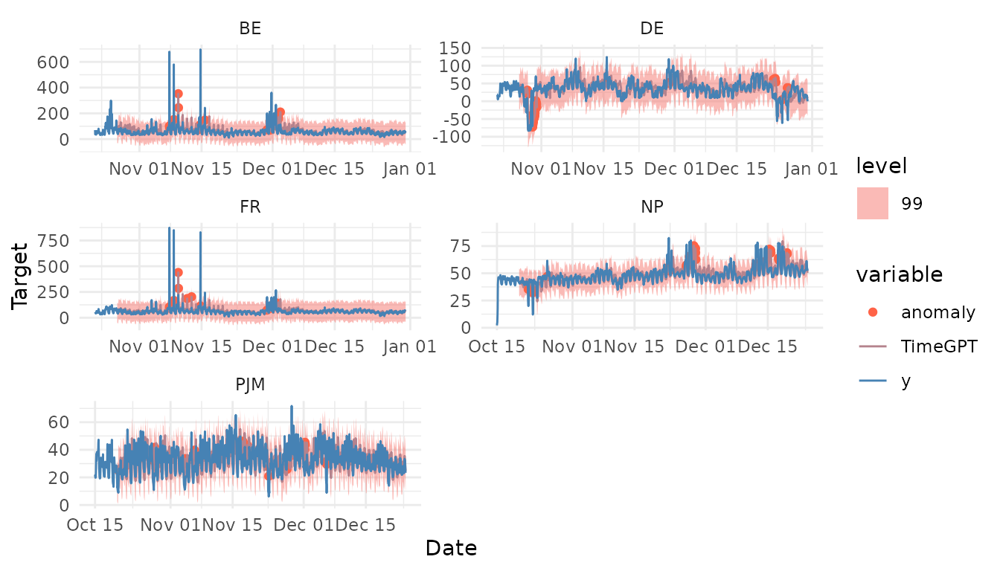

Anomaly Detection
anomaly-detection.Rmd
library(nixtlar)
#> Registered S3 method overwritten by 'tsibble':
#> method from
#> as_tibble.grouped_df dplyr1. Anomaly detection
Anomaly detection plays a crucial role in time series analysis and forecasting. Anomalies, also known as outliers, are unusual observations that don’t follow the expected time series patterns. They can be caused by a variety of factors, including errors in the data collection process, unexpected events, or sudden changes in the patterns of the time series. Anomalies can provide critical information about a system, like a potential problem or malfunction. After identifying them, it is important to understand what caused them, and then decide whether to remove, replace, or keep them.
TimeGPT has a method for detecting anomalies, and users
can call it from nixtlar. This vignette will explain how to
do this. It assumes you have already set up your API key. If you haven’t
done this, please read the Get
Started vignette first.
2. Load data
For this vignette, we’ll use the electricity consumption dataset that
is included in nixtlar, which contains the hourly prices of
five different electricity markets.
df <- nixtlar::electricity
head(df)
#> unique_id ds y
#> 1 BE 2016-10-22 00:00:00 70.00
#> 2 BE 2016-10-22 01:00:00 37.10
#> 3 BE 2016-10-22 02:00:00 37.10
#> 4 BE 2016-10-22 03:00:00 44.75
#> 5 BE 2016-10-22 04:00:00 37.10
#> 6 BE 2016-10-22 05:00:00 35.613. Detect anomalies
To detect anomalies, use
nixtlar::nixtla_client_detect_anomalies. The key parameters
of this method are:
-
df: The data frame or
tsibblewith the time series data. It should include at least a column with the datestamps and a column with the observations. Default names for these columns aredsandy. If different, please specify their names. - id_col: If the data contains multiple ids, as in this case, please specify the column that contains them. If working with a single series, leave it as it is by default (NULL).
nixtla_client_anomalies <- nixtlar::nixtla_client_detect_anomalies(df, id_col = "unique_id")
#> Frequency chosen: H
head(nixtla_client_anomalies)
#> unique_id ds y anomaly TimeGPT-lo-99 TimeGPT
#> 1 BE 2016-10-27 00:00:00 52.58 0 -28.58336 56.07623
#> 2 BE 2016-10-27 01:00:00 44.86 0 -32.23986 52.41973
#> 3 BE 2016-10-27 02:00:00 42.31 0 -31.84485 52.81474
#> 4 BE 2016-10-27 03:00:00 39.66 0 -32.06933 52.59026
#> 5 BE 2016-10-27 04:00:00 38.98 0 -31.98661 52.67297
#> 6 BE 2016-10-27 05:00:00 42.31 0 -30.55300 54.10659
#> TimeGPT-hi-99
#> 1 140.7358
#> 2 137.0793
#> 3 137.4743
#> 4 137.2498
#> 5 137.3326
#> 6 138.7662The anomaly_detection method from TimeGPT
evaluates each observation and uses a prediction interval to determine
if it is an anomaly or not. By default,
nixtlar::nixtla_client_detect_anomalies uses a 99%
prediction interval. Observations that fall outside this interval will
be considered anomalies and will have a value of 1 in the
anomaly column (zero otherwise). To change the prediction
interval, for example to 95%, use the argument level=c(95).
Keep in mind that multiple levels are not allowed, so when given several
values, nixtlar::nixtla_client_detect_anomalies will use
the maximum.
4. Plot anomalies
nixtlar includes a function to plot the historical data
and any output from nixtlar::nixtla_client_forecast,
nixtlar::nixtla_client_historic,
nixtlar::nixtla_client_detect_anomalies and
nixtlar::nixtla_client_cross_validation. If you have long
series, you can use max_insample_length to only plot the
last N historical values (the forecast will always be plotted in
full).
When using nixtlar::nixtla_client_plot with the output
of nixtlar::nixtla_client_detect_anomalies, set
plot_anomalies=TRUE to plot the anomalies.
nixtlar::nixtla_client_plot(df, nixtla_client_anomalies, id_col = "unique_id", plot_anomalies = TRUE)
#> Frequency chosen: H